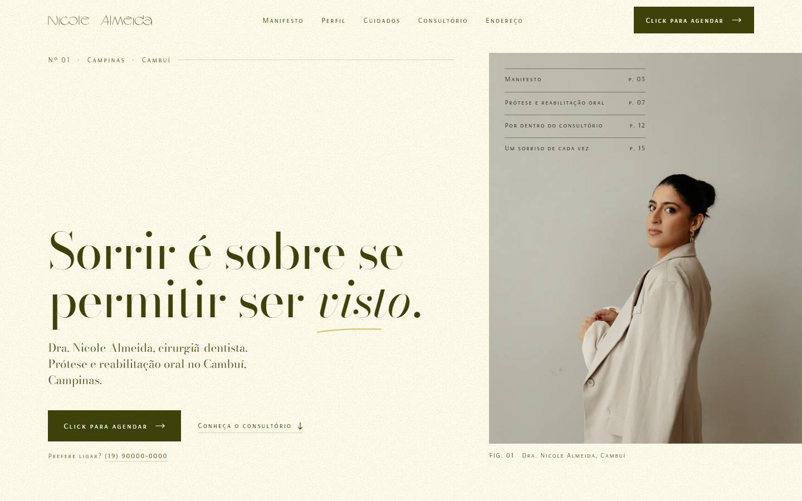
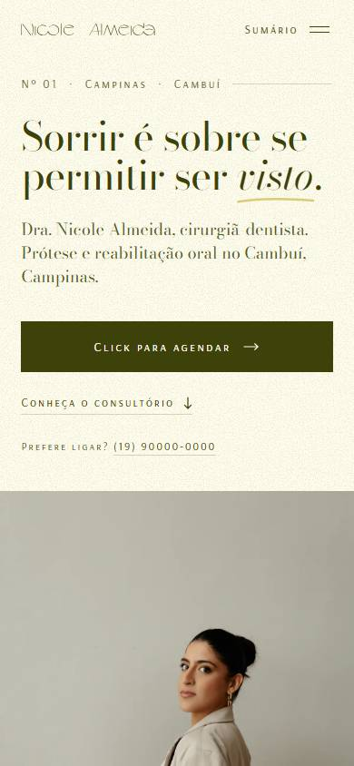
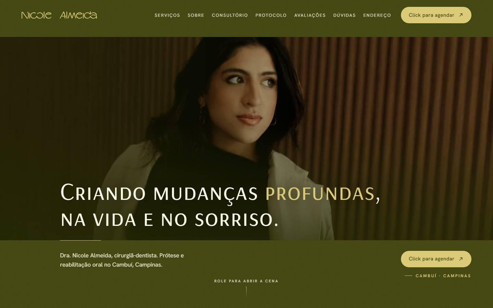
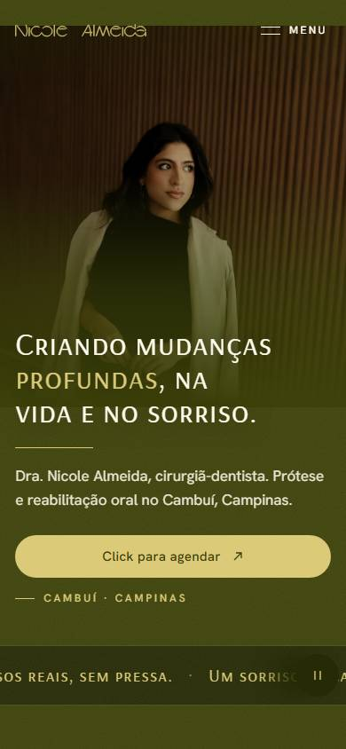
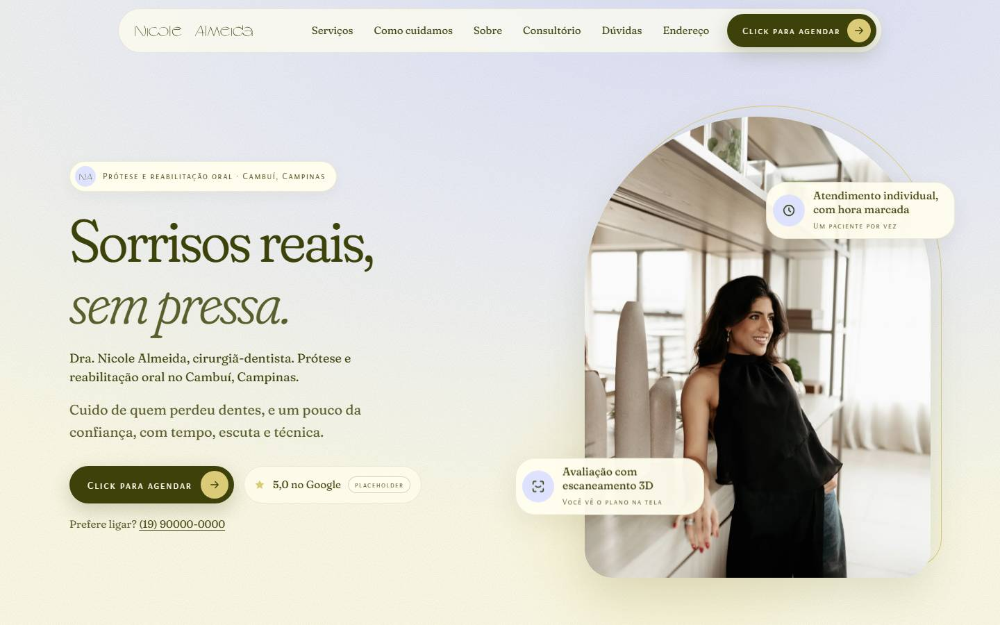
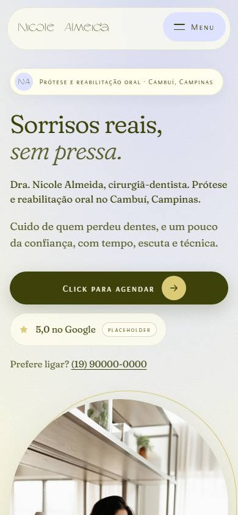
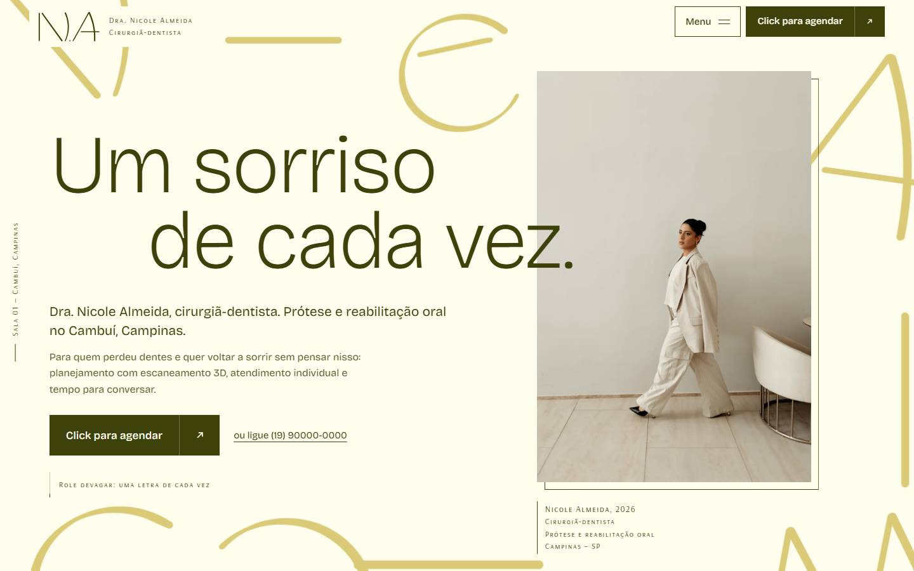
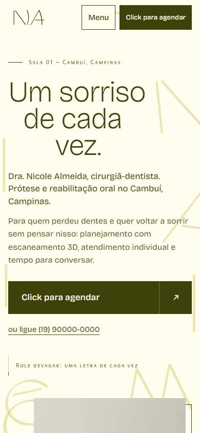
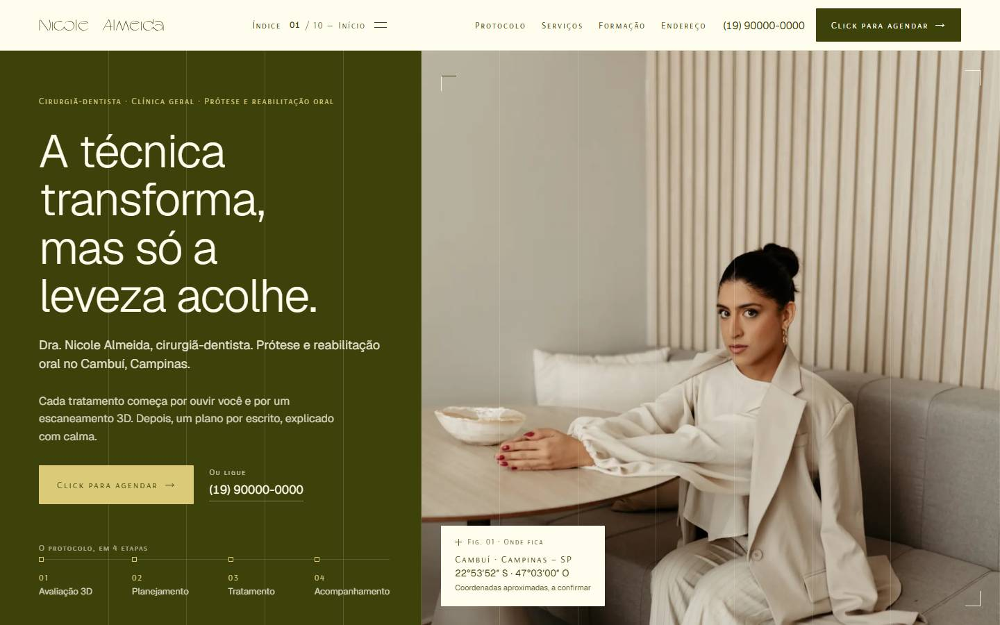
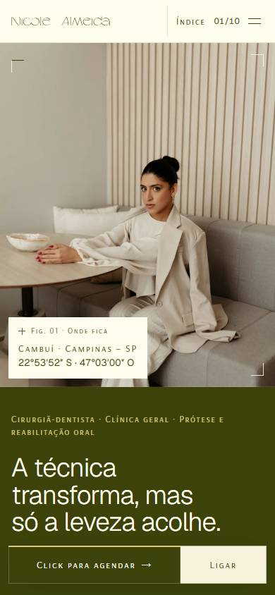

Editorial Creme
A home como uma revista de design e bem-estar, com a Dra. Nicole como autora. Retratos grandes, muito respiro e leitura sem pressa.
- Tema
- Claro e quente: Creme Pérola dominante, Verde Colina no texto
- Tipografia
- Bodoni Moda + Arsenal SC
- Assinatura
- Capa de revista: as chamadas ao lado do retrato são o menu. Folios "p. 07", legendas "FIG.", manifesto com capitular
- Movimento
- Fotos abrem como cortina, títulos sobem palavra por palavra


Verde Noturno
Luxo silencioso e cinematográfico. O Verde Colina vira uma sala escura acolhedora, e o terno creme da Nicole se destaca sobre ele.
- Tema
- Escuro: Verde Colina dominante, acentos em Amarelo Pólen
- Tipografia
- Arsenal SC como título + Hanken Grotesk
- Assinatura
- Cena em formato de cinema que se abre com o scroll; logo desenhado em traço dourado; "Sobre" contado em legendas
- Movimento
- Letterbox que vira tela cheia, créditos finais com o logo


Nuvem
Aéreo, suave e acolhedor, pensado para quem perdeu dentes e chega fragilizado. Arcos, pílulas e cards que flutuam.
- Tema
- Claro e leve: Azul Nuvem + Creme, Verde nos textos e botões
- Tipografia
- Fraunces (versão suave) + Arsenal SC
- Assinatura
- "Você se reconhece?": o paciente marca situações e a mensagem do WhatsApp já sai personalizada
- Movimento
- Arco do hero que "respira", caminho pontilhado entre as etapas


Galeria Tipográfica
A marca como exposição de arte. As letras do logo aparecem enormes, cortadas pelas bordas, e se montam no nome com o scroll: "uma letra de cada vez".
- Tema
- Claro com blocos de cor: Creme, Amarelo Pólen e Verde
- Tipografia
- Bricolage Grotesque + Arsenal SC
- Assinatura
- A padronagem da marca que se organiza em "Nicole Almeida"; etiquetas de galeria; selo giratório "Click para agendar"
- Movimento
- Letras com parallax, cor entrando em círculo a partir da letra


Precisão Serena
Transparência e método: o atendimento explicado como um bom manual, para o paciente que quer entender antes de decidir. O calor vem das fotos e da madeira clara.
- Tema
- Claro com painel escuro: Creme + Verde Colina, fichas em Azul Nuvem
- Tipografia
- Geist + Arsenal SC
- Assinatura
- Protocolo com painel verde fixo e números 01→04; fichas técnicas por serviço; tecnologia explicada
- Movimento
- Linha de "escaneamento" que revela cada foto, ecoando o scanner 3D